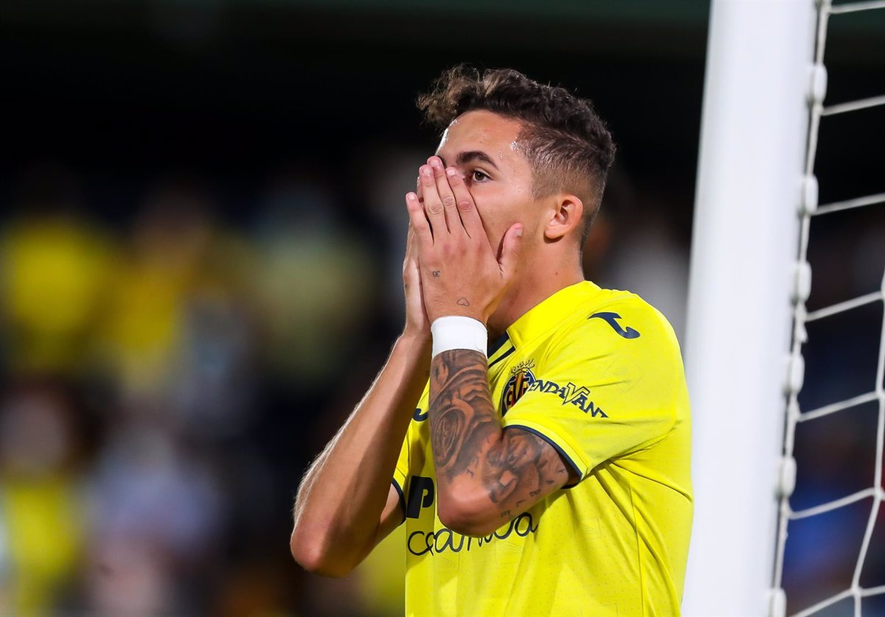

PIIIP
EL villareal empezaba atacando fuertemente, pero un mal control de Yeremi hizo que el balon acabara fuera de la cancha.
LLegamos a la mitad parte sin goles.
La mitad parte comenzo con un villareal atacando fuertemente.
Javi Mata(Periodista): Esperate que puede venir contrataque, la tiene Parejo, Parejo para Manu, pero madre mia que jugada, inexplicable, como la han sacado...

Arranca Ferran con la pelota.